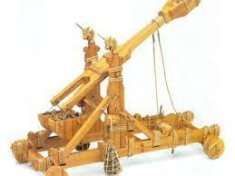
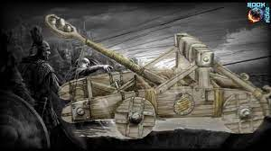

კატაპულტის ისტორია: ყველაზე პირველი ცნობილი ხელოვნური ბალისტიკური სხეულები იყვნენ ქვები, შუბები და სასროლი ჯოხები. პირველი განვითარებული ბალისტიკური სხეული რომლის გასასროლადაც საჭირო იყო მშვილდი თარიღდება 65 000 წლით, ის სიბუდუს გამოქვაბულში იპოვეს, დღევანდელი სამხრეთ აფრიკის რესპუბლიკის ტერიტორიაზე. ყველაზე პირველი ისარი რომელიც მშვილდიტ გაისროლეს თარიღდება 10 000 წლით, ის იპოვეს ხეობაში ჰამბურგის ჩრდილოეთით. მშვილდოსნები ამერიკის კონტინენტზე გამოჩნდნენ 4 500 წლის წინ. პირველი ცეცხლსასროლი იარაღები გამოჩნდნენ ჩინეთში, დაახლოებით 1000 წელს. და XII-XIII საუკუნეებში ის გავრცელდა ევროპასა და დანარჩენ აზიაში ბალისტიკა პირველად იტალიელმა მათემატიკოსმა ნიკოლო ტარტაგილიამ შეისწავლა 1531 წელს. ხოლო ისააკ ნიუტონმა ბალისტიკას თავისი უამრავი ნამუშევარი მიუძღვნა და ტრაექტორიების გამოთვლა შესაძლებელი გახადა. „ბალისტიკა“ მომდინარეობს ბერძნული სიტყვა βάλλειν-დან (ბალეინი) და ნიშნავს „გასროლას“
 